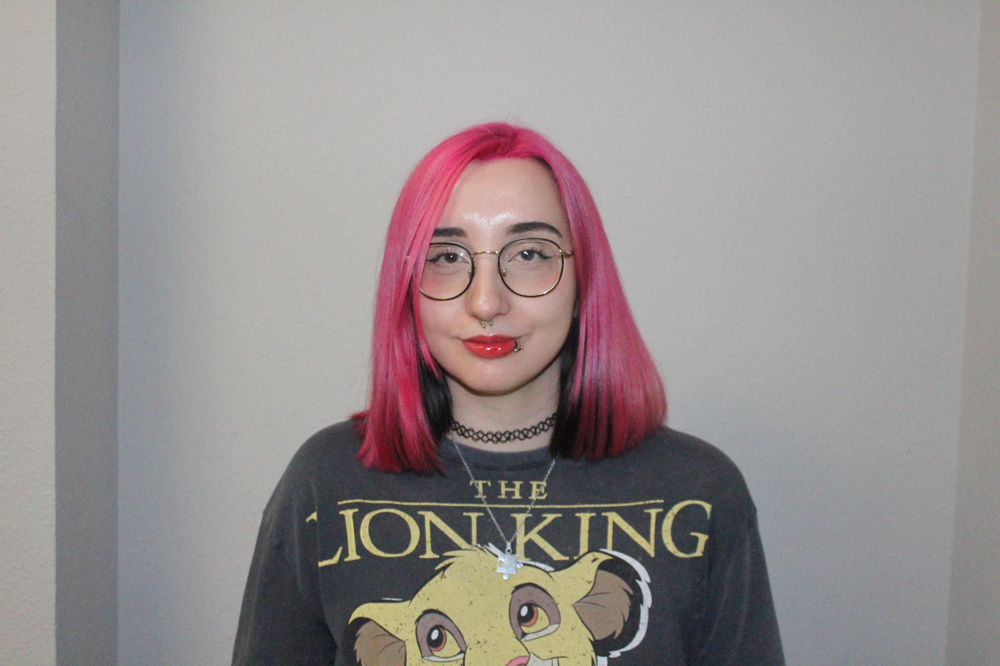

Desarrolladora Web · DAW 2026
Acabo de terminar DAW y ahora estoy aprendiendo React mientras sigo desarrollando proyectos y ampliando mis conocimientos en desarrollo web.
Sobre mí

Terminé DAW recientemente y durante estos dos años he trabajado con tecnologías como HTML, CSS, JavaScript, Java, Laravel, PHP, Angular, Wordpress y bases de datos.
Me gusta aprender haciendo proyectos y resolviendo errores que van apareciendo durante el desarrollo. Cuando algo no funciona, intento entender la causa antes de pedir ayuda, pero también entiendo cuándo es más eficiente apoyarme en otros.
Actualmente estoy ampliando mis conocimientos en React mediante proyectos personales y formación continua. Mi objetivo es seguir creciendo como desarrolladora y explorar tecnologías como Node.js, .NET y Python.
Habilidades
Frontend
Backend
Herramientas
Soft Skills
Aprendiendo ahora
En el radar — próximamente
Proyectos
2 proyectos
Residencia Huellas Felices
Aplicación web para gestionar una residencia canina: reservas, cuidados diarios, avisos, correos automáticos y facturación. Sistema de roles para clientes, cuidadores y administradores.
Desplegado en producción con Railway.
Overwatch Heroes API Explorer
Aplicación desarrollada en Angular como parte de mi formación en desarrollo web. Permite buscar y consultar información de héroes de Overwatch mediante una API REST, implementando routing, consumo de API y búsqueda dinámica.
Desplegado en Netlify e integrado con una API externa, siguiendo una arquitectura basada en componentes. La API utilizada ofrece traducción parcial de los datos, por lo que algunos campos pueden aparecer en inglés y otros en español según disponibilidad.
Próximamente
Nuevos proyectos en desarrollo. Actualmente trabajando en ampliar mi portfolio con nuevas aplicaciones web.
Formación
FP Superior · Desarrollo de Aplicaciones Web
IES Ruiz Gijón · Utrera, Sevilla
Ciclo formativo centrado en el desarrollo web completo: frontend, backend, bases de datos, despliegue y metodologías ágiles.
Residencia Huellas Felices
Proyecto fin de ciclo
Aplicación web para gestionar una residencia canina: reservas, cuidados diarios, avisos, correos automáticos y facturación. Sistema de roles para clientes, cuidadores y administradores.
Prácticas de Desarrollo Web
inventtatte
Durante mis prácticas del ciclo formativo DAW trabajé en el desarrollo y mantenimiento de páginas web en WordPress. Utilicé Divi para la maquetación, realicé ajustes con CSS y participé en la gestión de plugins y contenido en distintos sitios web.
Continuo
Formación autodidacta
OpenWebinars · Udemy · Cursos online · Proyectos personales
Formación continua a través de plataformas como OpenWebinars, Udemy y otros recursos online.
Contacto
Actualmente busco una oportunidad para incorporarme a un equipo donde seguir creciendo como desarrolladora y aportar todo lo que he aprendido hasta ahora. Si crees que encajo, escríbeme.
azaharaparrales@gmail.com